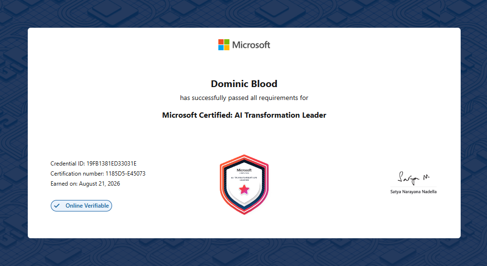

This is a small demonstration of my portfolio of works. Whilst I am not a web developer; I have a keen interest in increasing my knowledge of web technologies and the development of web applications. First, I will provide supplementary information about myself and my background, then I will draw focus to my current fundamental knowledge with regards to web technologies and HTML.
My name is Dom Blood. I graduated from SHU in 2024 with a First Class Honours degree in IT Consultancy. My dissertation was based on the needs and requirements of effective Enterprise Architecture practices within local authorities. Aptly titled "Bringing Enterprise Architecture (EA) Value to Local Government: A Case Study", where I explored the benefits of EA, and how its practices could be utilised to avoid unnecessary costs within a major project implementation.
I have worked in Local Government for 8 years now, progressing from a L2 apprentice, through to my Master's where I am now an AI Architect. Recently, I obtained the MSFT Certified AI Transformation Leader certification, as below:

My current knowledge of web technologies is limited to the basics of HTML. I have only recently started to explore the language within my role where I frequently utilise HTML for Power Automate workflows. I have also previously created an index.html page for a journal publicaiton; of which, I will appear in two papers, due to be released imminently. Information on the journal can be found here.
For more information about me, please visit my LinkedIn profile here, please connect with me!